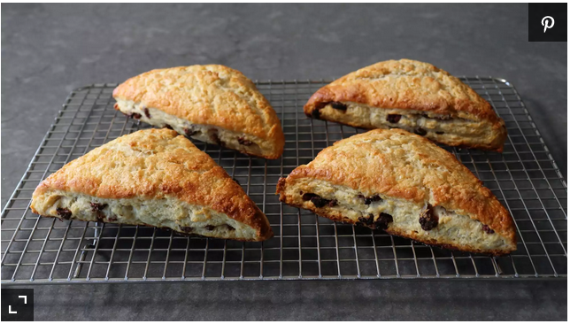

Raspberry-White Chocolate Scones

Description
In this scone recipe, I used dried raspberries to add intense flavor and replaced some
of the butter with grated white chocolate. The result? Perfectly textured, tender, and
light scones that weren't too delicate or crumbly. Definitely some of the best I've ever had! Serve with a nice cup
of tea.
Ingredients
- 2 (6 ounce) containers fresh raspberries
- 2 ½ ounces white chocolate, or as needed
- 2 cups all-purpose flour, or more as needed
- 1 tablespoon white sugar, or more to taste
- ½ teaspoon kosher salt
- 4 teaspoons baking powder
- 5 tablespoons ice cold unsalted butter
- ¾ cup milk
- 2 tablespoons sour cream
- 1 large egg
- 1 tablespoon milk
Steps
-
Preheat the oven to 225 degrees F (110 degrees C).
-
Line a baking sheet with a silicone liner.
-
Place fresh raspberries about 1 inch apart on the prepared baking sheet.
-
Bake in the preheated oven for 4 hours, then turn oven off, leaving the berries inside for 8 hours, or overnight.
-
Preheat the oven to 400 degrees F (200 degrees C). Line a baking sheet with a silicone liner.
-
Roughly chop dried raspberries into smaller pieces and measure out ½ cup for this recipe.
Reserve any extra for another use.
-
Grate white chocolate on the fine side of a grater until you have ½ cup.
-
Whisk 2 cups flour, sugar, salt, and baking powder together in a mixing bowl.
Grate cold butter into the flour mixture, tossing every so often to coat it
with flour so it doesn't start to clump. When all butter has been added, work
it into the flour with a pastry blender. Add grated white chocolate and toss with a fork to incorporate.
-
Whisk ¾ cup milk and sour cream together in a liquid measure, then pour that into the flour mixture.
Mix with a fork until everything just barely comes together to form a shaggy dough.
-
Transfer dough to a generously floured work surface and without kneading, push and pack it together with
your hands until it holds its shape, adding a little flour if it's too sticky. Press dough into a rectangle,
about ¾-inch thick, and roughly twice as long as it is wide.
-
Sprinkle dried raspberries evenly over the dough. Spread berries out almost to the edges and press them into the
dough gently. Using a bench scraper, lift one third of the dough from one of the shorter edges and fold it in over
the center third; press it down and square off the edges. Repeat with the other side so your scone dough is three
layers thick.
-
Cut the rectangle in half with the bench scraper, then cut each half into 2 triangles.
Transfer scones to the prepared baking sheet.
-
Whisk egg and 1 tablespoon milk together. Brush egg wash over each scone and sprinkle with sugar.
-
Bake in the upper center of the preheated oven until browned, about 25 minutes.
-
Quickly and carefully transfer to a rack and let cool completely before serving, about 30 minutes.
Home